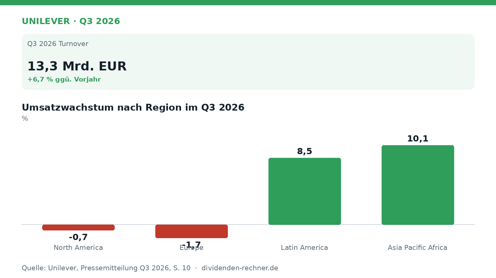
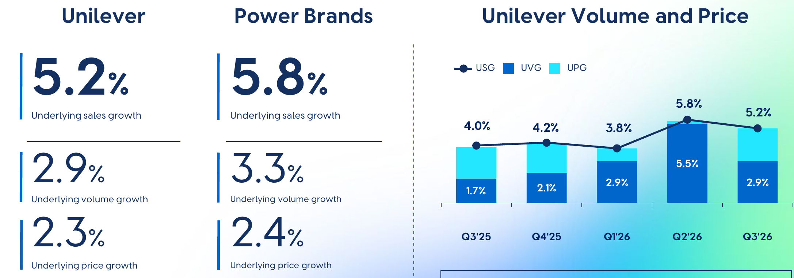
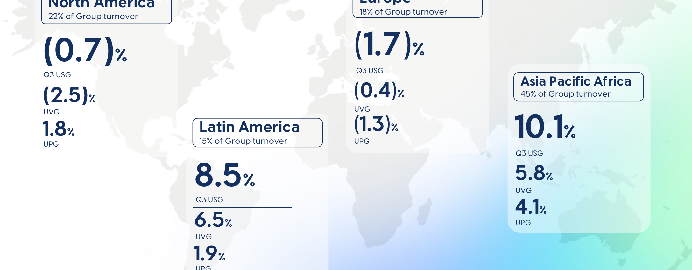
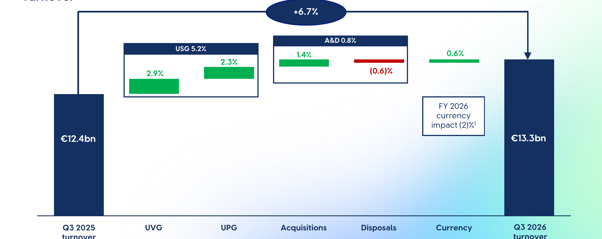

Quartalszahlen

Unilever steigert Umsatz auf 13,3 Milliarden Euro und hebt Ausblick an
Unilever legt Zahlen für das dritte Quartal 2026 vor. Der Umsatz wächst um 6,7 Prozent, getragen von Preisen und Volumen.
Kurz gesagt
Umsatz: 13,3 Mrd. EUR (+6,7 %)
- Umsatz und Volumen: Der Konzernumsatz steigt im dritten Quartal auf 13,3 Milliarden Euro, gestützt von einem organischen Wachstum von 5,2 Prozent.
- Der Grund: Vor allem starke Volumina und notwendige Preiserhöhungen als Reaktion auf gestiegene Rohstoffkosten treiben die Erlöse.
- Knackpunkt: In den Regionen Nordamerika und Europa sinken die Umsätze organisch, was die Gesamtdynamik bremst.

Eigene Darstellung nach Daten aus: Unilever, Quartalszahlen Q3 2026 vom 2026-10-28.Unilever wächst über Kernmarken und Preise und hebt den Ausblick an
Unilever hat im dritten Quartal 2026 seinen Umsatz kräftig gesteigert und den Ausblick für das Gesamtjahr angehoben. Der Konsumgüterkonzern profitierte dabei von einer anhaltend starken Nachfrage nach seinen Kernmarken und einer schrittweisen Preisanpassung in wichtigen Märkten.
Das Quartal im Detail
Im dritten Quartal kletterte der Konzernumsatz von 12,4 Milliarden Euro im Vorjahreszeitraum auf 13,3 Milliarden Euro. Das entspricht einem Gesamtplus von 6,7 Prozent. Das zugrundeliegende Umsatzwachstum lag bei 5,2 Prozent, aufgeteilt in 2,9 Prozent Volumenwachstum und 2,3 Prozent Preiserhöhungen. Wie die Grafik zeigt, griffen Preisanpassungen vor allem dort, wo steigende Rohstoffkosten ausgeglichen werden mussten.

Unilever Volumina und Preise. Quelle: Unilever, Quartalszahlen Q3 2026 vom 2026-10-28, S. 5. Ausschnitt nur zugeschnitten, sonst unverändert.Regional zeigt sich ein gespaltenes Bild. Während in den Schwellenländern kräftig zugegriffen wurde – in Asien, Pazifik und Afrika wuchs der Umsatz organisch um 10,1 Prozent, in Lateinamerika um 8,5 Prozent –, schrumpften die Erlöse in den etablierten Märkten. In Europa ging der Umsatz organisch um 1,7 Prozent zurück, in Nordamerika um 0,7 Prozent.

Emerging Markets Wachstum. Quelle: Unilever, Quartalszahlen Q3 2026 vom 2026-10-28, S. 10. Ausschnitt nur zugeschnitten, sonst unverändert.Die Überleitung des Wachstums
Das Umsatzplus von 12,4 Milliarden Euro auf 13,3 Milliarden Euro setzt sich aus verschiedenen Komponenten zusammen. Neben dem organischen Wachstum trugen Akquisitionen und Veräußerungen netto 0,8 Prozent bei, während Währungseffekte einen kleinen positiven Beitrag von 0,6 Prozent lieferten, wie die Überleitung verdeutlicht.

Überleitung des Umsatzes Q3 2025 zu Q3 2026. Quelle: Unilever, Quartalszahlen Q3 2026 vom 2026-10-28, S. 11. Ausschnitt nur zugeschnitten, sonst unverändert.Ausblick
Angesichts des stabilen Laufs hat das Management die Prognose für das Gesamtjahr 2026 nach oben angepasst. Erwartet wird nun ein organisches Umsatzwachstum zwischen 4 und 6 Prozent, wobei das Volumenwachstum bei mindestens 3 Prozent liegen soll. Zudem stellt das Unternehmen eine leichte Verbesserung der operativen Marge gegenüber dem Vorjahr in Aussicht.
Die wichtigsten Zahlen im Überblick
| Kennzahl | Wert | Veränderung zum Vorjahr | Quelle |
|---|---|---|---|
| Q3 2026 Turnover | 13,3 Mrd. EUR | +6,7 % | S. 11 |
Quelle: Unilever, Quartalszahlen Q3 2026 vom 2026-10-28. Rechenwege eigene Berechnung. Keine Anlageberatung.
Hinweis: Dieser Text dient der allgemeinen Information und ist weder Anlage-, Steuer- noch Rechtsberatung. Kapitalanlagen sind mit Risiken verbunden, bis hin zum Totalverlust.